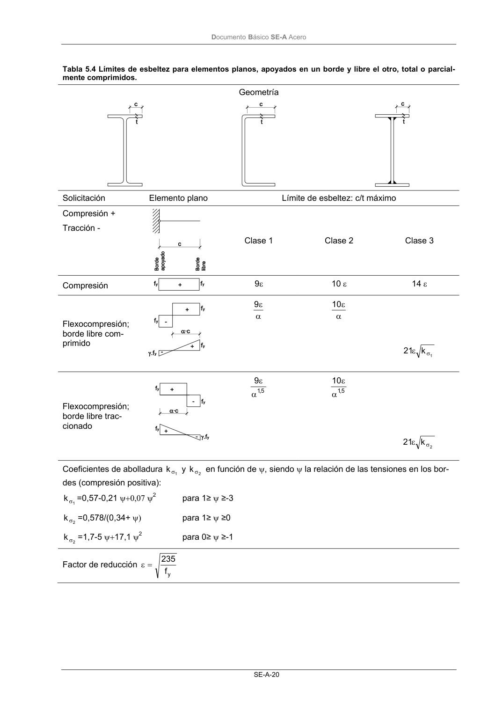

DB-SE-A Acero · edición 2007-10-23 · capa oficial
Documento DB-SE-A-oficial · SHA-256 del PDF 9ed9ea694aabfbda3bfbbef40dfe9223fde05d13c35bc2ba9751e5a96a22a64f
Página física 22 de 168.
Copia fiel del PDF fuente · Fuente oficial
Ficha de la disposición en la fuente oficial
Formato: Texto de la página (Markdown)
Documento Básico SE-A Acero SE-A-20 Tabla 5.4 Límites de esbeltez para elementos planos, apoyados en un borde y libre el otro, total o parcial- mente comprimidos. Geometría Solicitación Elemento plano Límite de esbeltez: c/t máximo Compresión + Tracción - Clase 1 Clase 2 Clase 3 Compresión 9ε 10 ε 14 ε Flexocompresión; borde libre com- primido α ε 9 α ε 10 1 k 21 σ ε Flexocompresión; borde libre trac- cionado 5 ,1 9 α ε 5 ,1 10 α ε 2 k 21 σ ε Coeficientes de abolladura 1 k σ y 2 k σ en función de ψ, siendo ψ la relación de las tensiones en los bor- des (compresión positiva): 1 k σ =0,57-0,21 ψ+0,07 ψ2 para 1≥ ψ ≥-3 2 k σ =0,578/(0,34+ ψ) para 1≥ ψ ≥0 2 k σ =1,7-5 ψ+17,1 ψ2 para 0≥ ψ ≥-1 Factor de reducción yf 235 = ε
